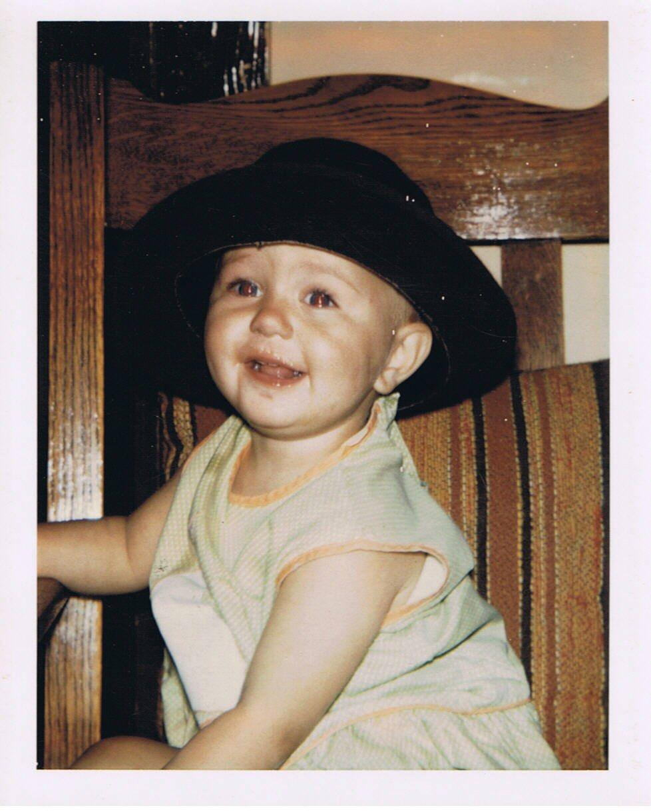
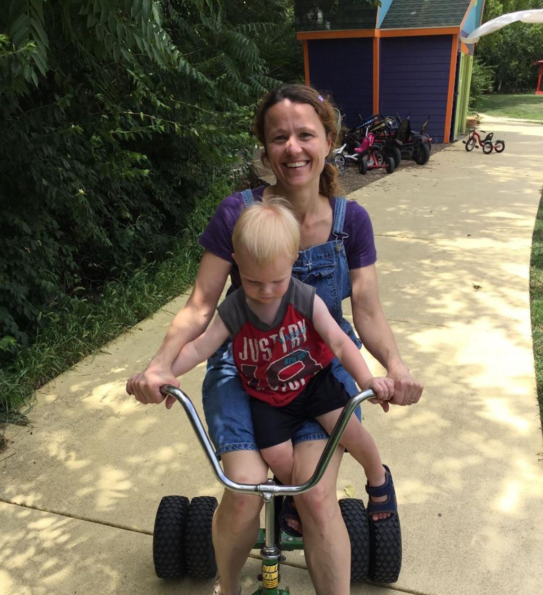
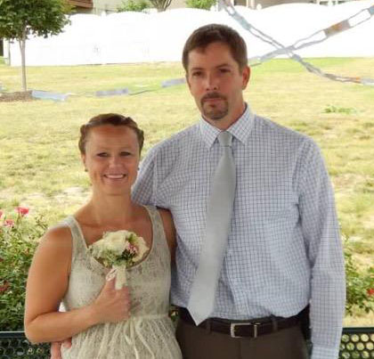

Mother (noun): a female parent
This is how a mother is defined in the dictionary. However, I believe it means so much more. Whether you are a single mother or not, your job doesn't stop at bringing life into the world. This isn't what it means to be a mother. You care for, nurture, teach, and raise a human being.
Angela was born in Omaha and raised in Wahoo, Nebraska. She grew up with her mother, Margaret, her father, Claude, and her 13 brothers and sisters. She was the 12th out of the 14 children. Even at a young age, Angela had a lot of responsibilities. By the age of 6 she was balancing the family checkbook and keeping track of finances.
After graduating High School at 18 years old, she married and moved away from home. The next year, Angela and her husband had their first child. A daughter, they named Ashleigh Jordan. In 1994, two years later, they brought into the world their second daughter, Jazmine Anastazia. After suffering a miscarriage three years later, they had their last child, a boy named Jonathan Andrew David.
Unfortunately, while Angela was being a strong, dedicated, working parent, the father of her children was not. Discovering his infidelity, she became a single mother of three children, with a High School Diploma, and a minimum wage job. Even with the help of her family supporting and pitching in, she now had the added responsibility of being a single parent. After years of getting by, she decided to go to back to school and better her future not just for her children, but also for herself.
After quitting her full-time job at Hy-Vee that was supporting her and her kids, she started working towards a Business Administration/Management degree. Even though money was almost non-existent, school was hard, and they had to move around, she was determined to provide a more stable life for her children. She graduated with her first degree in Business and even went back to earn 2 master's degrees in clinical counseling.
In 2013, she married a native Kansas man, William McClain. After their marriage, she moved to Kansas with his two children and opened her own alcohol and drug abuse counseling business; Firm Foundations Counseling Inc. At this point in her life, her two oldest children, Ashleigh and Jazmine, had already moved out and started their own lives. Her youngest was living with them in Kansas, finishing up High School.
Today, Angela is still running her own business with her husband by her side. Her three children are all married and live in three different states. She is a grandmother to three children, with two more on the way. Angela Peavy-McClain started her life journey as a daughter and sister to many. Throughout her life she has dealt with death, divorce, financial struggles, family hardships, and personal internal battles. But she has also experienced love, marriage, children, grand-children, educational success, and a successful career. She raised her children on her own and took charge of her life.
Mother (noun): Someone who is strong, loving, determined, supportive, and resilient, who shelters and guides her children.
This is my definition of what it means to be a mother.